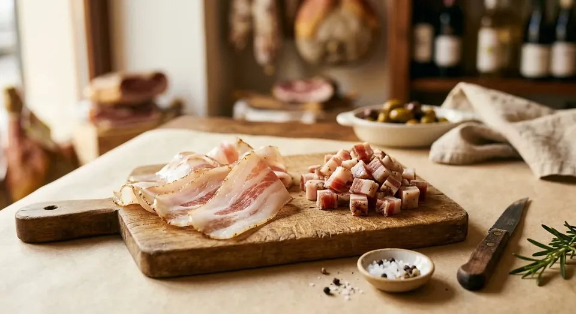
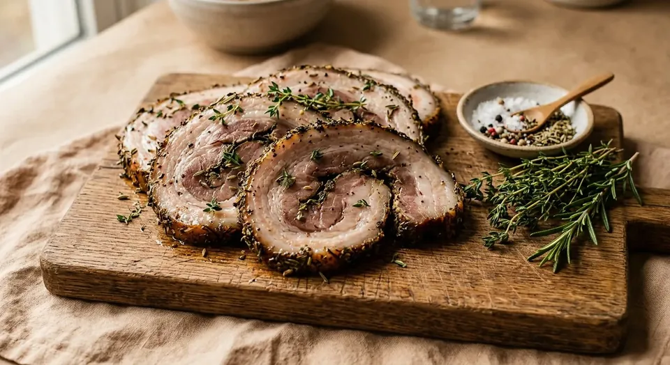
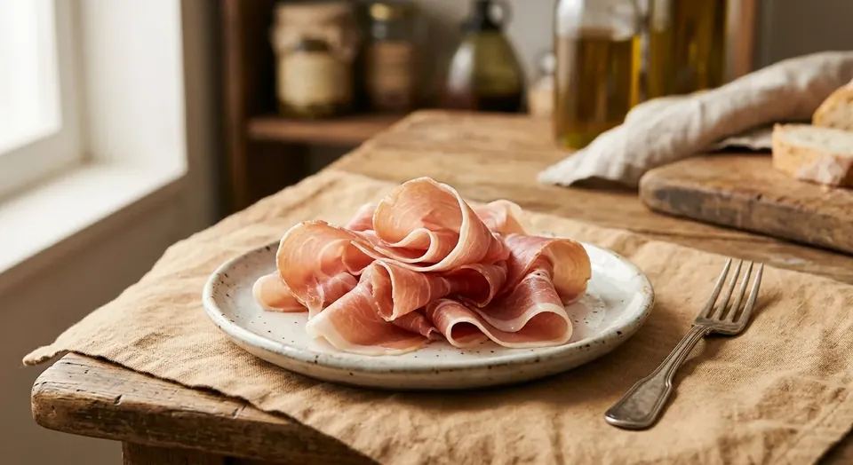
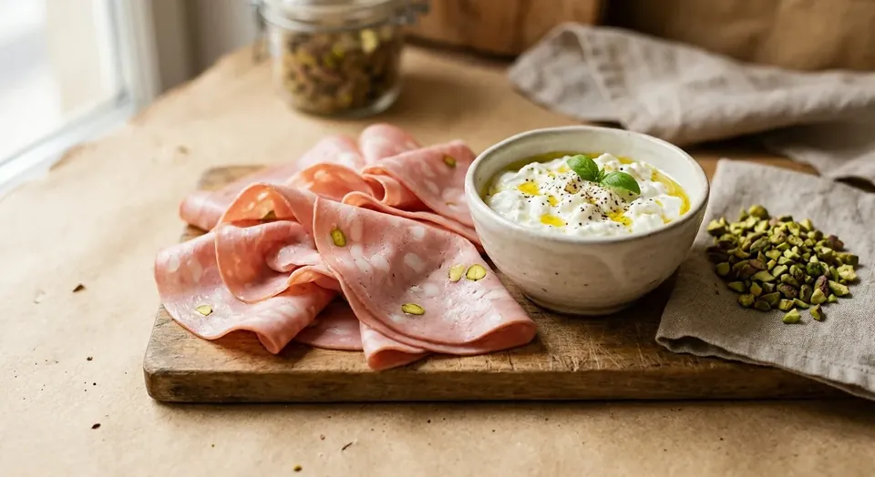
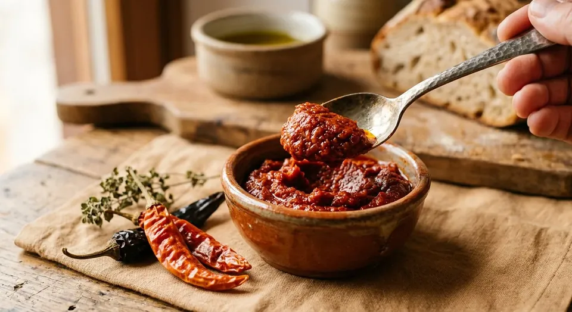
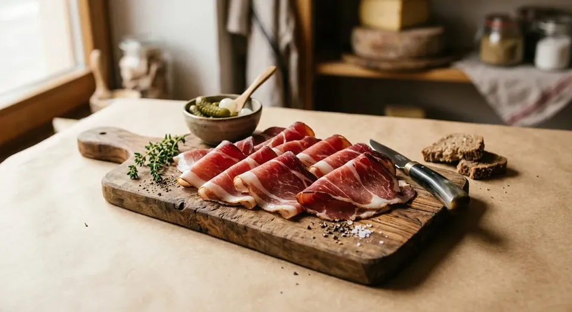

Five Laws of Luxury Pizza Toppings
1. The 2-to-3 Star Player Rule
Great pizzerias never win by piling twelve toppings onto one crust. Pick strictly one lead protagonist (e.g., smoked marinated turkey), at most one supporting co-star (e.g., Fontina), and one finishing accent (e.g., Hot Honey). Past three players, flavors muddy together and center crust goes soggy.
2. Free Moisture Is Enemy #1
Every wet ingredient demands active moisture control before touching raw dough: drain fresh cheeses thoroughly, blot excess marinade oil off meats with paper towels, and pre-sauté watery vegetables — zero free liquid belongs on stretched dough.
3. Respect the Three Thermal Windows
Pre-Oven: anything built to melt, render, cup, or crisp under high heat. Final Minutes: delicate items needing brief gentle warmth without scorching. Post-Oven: every ingredient whose silkiness, cold contrast, or volatile aroma dies in heat — Prosciutto Crudo, Burrata, Mortadella, living basil/arugula, and fine finishing oils.
4. Engineer Contrast, Never Redundancy
Luxury flavor architecture runs on deliberate tension: piping-hot vs. ice-cold (chilled whipped ricotta over blistering crust), salty vs. sweet-heat (cured pork + Hot Honey), rich lipid vs. bright acid (charcuterie + fresh Microplane lemon zest), and velvety vs. shattering crisp.
5. Taste Solo Before Combining
Sample every new cheese or cured meat plain on a small corner first — if an ingredient disappoints solo, burying it on pizza won't rescue it; and if fiercely salty or spicy solo, deploy far less weight than instinct suggests.
Smoked Marinated Turkey (Reconstructing Your Signature Formula)
You described marinating thin slices of turkey breast/bacon in olive oil and spices overnight in the fridge with killer results. Here is the exact culinary reconstruction: olive oil carries fat-soluble spices while shielding lean poultry from drying out, smoked paprika supplies deep wood-smoke aroma, garlic and black pepper build savory backbone, and a touch of brown sugar caramelizes the edges crisp inside a hot oven.
-
Base Reconstructed Formula (Per 200 g Sliced Turkey)
- Extra-virgin olive oil: 1.5 tablespoons
- Smoked paprika: 1 teaspoon
- Garlic powder: ½ teaspoon
- Freshly ground black pepper: ½ teaspoon
- Dried thyme OR dried oregano: ½ teaspoon
- Crushed red pepper flakes: ¼ teaspoon
- Brown sugar OR honey: ½ teaspoon
- Salt: strictly 1 tiny pinch ONLY if using unsalted raw turkey breast (most deli/smoked turkey slices are already cured salty).
-
Marination Technique
Whisk olive oil and all spices into a glossy spice paste inside a bowl, add turkey slices one by one, and massage gently by hand until both sides of every ribbon are coated. Seal airtight with zero air pockets and refrigerate at least 4 hours — sweet spot 8 to 12 hours, maximum 24 hours. Always discard spent marinade afterward.
-
Pre-Pizza Prep & Moisture Blot
Pull slices out and blot off excess surface oil thoroughly on paper towels — free oil pooling on raw dough creates greasy soup and gummy crust! Using raw turkey slices? Flash-sear 30 to 45 seconds per side in a dry screaming-hot skillet first so surfaces seal cleanly before finishing in the oven. Deploy 50 to 70 g per pizza laid whole or halved on top of the cheese layer (never buried soggy under tomato sauce).
-
In-Oven Crisp & Post-Oven Finisher
Laying blotted slices openly atop the cheese lets high radiant heat curl and caramelize their edges crisp. If thin slices brown too fast in your oven, skip pre-searing on Pie #2 or lay them on halfway through the bake. Pull hot and finish with a drizzle of Hot Honey + fresh thyme leaves.
Three Side-by-Side Test Variations (Per 200 g Turkey)
-
Variation 1: Classic Italian Trattoria
Per 200 g turkey: 1.5 tbsp olive oil, 1 small crushed fresh garlic clove (or ½ tsp garlic powder), 1 tsp cracked black pepper, ½ tsp dried thyme, ¼ tsp crushed dried rosemary, ½ tsp finely grated lemon zest, and a tiny pinch of salt. Profile: clean, herbaceous, restaurant-refined — unbeatable alongside Fontina + caramelized onions.
-
Variation 2: Deep Smokehouse & Spicy
Per 200 g turkey: 1.5 tbsp olive oil, 1.5 tsp smoked paprika, ½ tsp garlic powder, ½ tsp chili flakes, 1 tsp brown sugar, ½ tsp black pepper, and a tiny pinch of salt. Profile: bold campfire smoke and dark caramelized edges — pairs best with Smoked Scamorza + Hot Honey.
-
Variation 3: Glossy Sweet-Heat Glaze
Per 200 g turkey: 1 tbsp olive oil, 1 tsp honey, 1 tsp smoked paprika, ¼–½ tsp chili flakes, ½ tsp black pepper, ½ tsp garlic powder, and just a few drops of apple cider vinegar or lemon juice (~½ tsp — purely to wake brightness up, never turn sour). Profile: lacquered, sweet-heat addictive — shines over simple Mozzarella + shaved red onion.
Artisan Flavor Meats & Rendered Fats
-
Crispy Rendered Guanciale + Pecorino & Black Pepper

Guanciale What & Why: Cured Italian pork jowl whose rich fat renders translucent-crisp with deeper porky savoriness than belly bacon — undisputed king of Roman white pies.
- Per Pizza: 60 to 80 g cut into matchsticks or small dice.
- Prep: Start in a cold dry skillet over medium-low heat for 6 to 10 minutes until edges crisp golden; drain on paper towels (optionally brush up to 1 tsp rendered fat onto crust rim or white base, no more).
- Timing: Scatter crisp rendered lardons over cheese pre-oven so residual fat glosses the pie mid-bake.
- Pairings: Light Mozzarella, Pecorino Romano showered right after baking (15 g), assertive cracked black pepper, and optional dollops of ricotta.
- Mistake to Avoid: Tossing thick raw Guanciale chunks straight into a short pizza bake leaves chewy rubbery centers — always render first!
-
Your Homemade Porchetta-Infused Bacon

Porchetta-Infused Bacon What & Why: Your own 7-day cured pork belly crusted in fresh thyme, rosemary, garlic paste, orange zest, chili, and nutmeg — infinitely more aromatic than grocery bacon and engineered specifically for pizza lardons.
- Per Pizza: 50 to 70 g cut into clean 1 cm cubes.
- Prep: Chill slab 6–12 hours firm per its dedicated page, dice cleanly, pan-sear 3 to 4 minutes in a dry skillet just until edges blush golden, and drain excess fat.
- Timing: Scatter over cheese pre-oven (or half pre-oven + half for the final 2 minutes for dual textures).
- Pairings: Fontina, sweet caramelized onions, seared mushrooms, and a Hot Honey finish.
- Full Recipe Link: Built right inside CookBook at Porchetta-Infused Bacon.
-
Smoked Marinated Turkey (Quick Slot Summary)
Marinated Smoked Turkey Bacon Documented in full directly above under Page Headliner: 50 to 70 g per pie, 4–12h fridge marinade across Italian / Smokehouse / Sweet-Heat profiles, blotted dry, flash-seared 30–45s per side if starting raw, baked atop cheese, and finished with Hot Honey.
-
Post-Bake Prosciutto Crudo

Prosciutto Crudo What & Why: Dry-cured aged Italian ham — gossamer-thin, sweet-salty, and meltingly silky; oven heat instantly turns it leathery salty and destroys delicate cured aromatics.
- Per Pizza: 40 to 60 g (3 to 5 whisper-thin slices).
- Prep: Pull from the refrigerator 10 minutes ahead so cold fat softens and blooms aroma.
- Timing: Strictly post-oven — tear loosely by hand and drape into airy ribbons over hot pizza so rising steam barely warms the fat translucent.
- Pairings: Whole Burrata or Stracciatella, peppery wild arugula, fresh lemon zest, and fruity olive oil.
- Mistake to Avoid: Baking Prosciutto in the oven “to crisp up” — that ruins fine crudo into salty leather chips!
-
Mortadella + Crushed Pistachio & Stracciatella

Mortadella, Pistachio & Stracciatella What & Why: Silky emulsified Bolognese pork studded with sweet fat cubes; paired cold-on-hot with green Bronte pistachios and creamy Stracciatella, it is modern Italy's most iconic luxury white pizza.
- Per Pizza: 50 to 70 g thin-sliced Mortadella (4–6 slices), 60 to 80 g Stracciatella, and 8 to 10 g crushed roasted pistachios.
- Prep: Ruffle and fold slices into airy rosettes for height rather than laying flat.
- Timing: 100% post-oven atop a hot white pie: spoon Stracciatella first, nestle ruffled Mortadella second, shower crushed pistachios + fresh lemon zest last.
- Pairings: Sauce-free white Mozzarella base + finishing thread of pistachio oil or extra-virgin olive oil.
- Mistake to Avoid: Baking Mortadella inside the oven grays its delicate pink blush and toughens its silk texture.
-
'Nduja — Spreadable Fiery Calabrian Pork

Nduja What & Why: Soft, spreadable Calabrian cured pork sausage packed with roasted red chilies that melts into incandescent spicy pork oil across molten cheese.
- Per Pizza: 30 to 50 g — always start conservatively around 30 g!
- Prep: Pinch into tiny ½-teaspoon pebbles — zero spreading required since oven heat liquefies it completely.
- Timing: Dot pre-oven directly onto tomato sauce partially tucked beneath cheese so chilies melt without scorching black (or split half pre-oven + half melted over hot crust).
- Pairings: Ice-cold post-oven Stracciatella, fresh basil leaves, and plain floral honey (skip extra Hot Honey unless chasing serious fire).
- Mistake to Avoid: Heavy-handed dosing floods the pie in orange chili grease and drowns every other flavor.
-
Smoked Alpine Speck

Speck What & Why: Cold-smoked juniper-cured Alto Adige ham bridging silky Prosciutto and smoky bacon — unique in offering both a silky raw personality AND a crisp rendered personality.
- Per Pizza: 40 to 60 g.
- Prep: Crisp path: sizzle thin strips 2–3 minutes in a dry pan; silky path: zero prep.
- Timing: Pre-crisped strips go on pre-oven over cheese; silky ribbons drape immediately post-oven like Prosciutto.
- Pairings: Fontina, roasted wild mushrooms, mandoline-shaved potato slices, and creamy Taleggio.
- Mistake to Avoid: Mixing raw and crisped Speck together on the same pie — commit cleanly to one texture.
-
Spicy Cup-and-Char Soppressata / Salami
Soppressata / Spicy Salami What & Why: Dry-cured spicy salami that curls into crisp-edged cups at high heat, pooling spicy rendered oil inside every chalice — essential on modern New York and neo-Neapolitan pies.
- Per Pizza: 40 to 70 g (~8 to 12 thin slices).
- Prep: Space slices cleanly apart with zero overlapping so rims curl freely.
- Timing: Lay atop cheese pre-oven (thinner slicing + fierce top heat maximizes cupping).
- Pairings: Mozzarella, cold post-oven whipped lemon ricotta, fresh basil, and Hot Honey.
- Mistake to Avoid: Shingling thick overlapping slices leaves steamed chewy centers alongside charred edges.
Seven Level-Up Artisan Cheeses
-
Post-Oven Burrata or Stracciatella
Burrata & Stracciatella What & Why: Burrata wraps a thin mozzarella pouch around a luscious cream-curd core (Stracciatella); engineered strictly for cool dairy contrast atop blistering crust since baking ruptures them into watery whey puddles.
- Per Pizza: One whole 100–125 g Burrata ball OR 60–80 g loose Stracciatella.
- Prep: Pull from fridge 20 minutes before service to take off harsh chill; slice whole Burrata open right at the table.
- Timing: Strictly post-oven — crown center with whole Burrata or spoon Stracciatella across each hot slice.
- Pairings: Prosciutto Crudo, ruffled Mortadella + pistachio, spicy 'Nduja, sweet cherry tomatoes, and fresh basil.
- Mistake to Avoid: Baking inside the oven OR dropping onto an underbaked wet pie floor.
-
Taleggio for Deep Funky Creaminess
Taleggio What & Why: Washed-rind Lombardy semi-soft cheese carrying bold cellar aroma that mellows into shockingly lush, savory puddles far deeper than mild Mozzarella alone.
- Per Pizza: 50 to 70 g in 1 cm cubes.
- Prep: Trim outer washed rind cleanly and keep cubes cold so they hold shape until baking.
- Timing: Dot pre-oven nestled among base Mozzarella.
- Pairings: Browned mushrooms, Alpine Speck, shaved rosemary potato, and a whisper of honey.
- Mistake to Avoid: Overloading past 70 g — start right at 50 g so its funky depth sings rather than dominates.
-
Fontina Val d'Aosta (Your Detroit Secret Weapon)
Fontina What & Why: Semi-firm Alpine cow's-milk cheese with elastic stretch and deep toasted-nut sweetness — star of your Detroit Frico wall and best all-around partner beside Mozzarella on round pies.
- Per Pizza: 50 to 80 g cubed or coarse-grated alongside 60 to 80 g Mozzarella.
- Prep: Slice waxy rind off completely and cube cold.
- Timing: Pre-oven — tuck extra cubes right along pan walls when chasing caramelized lacy edges.
- Pairings: Reconstructed smoked turkey, crisp Guanciale, roasted mushrooms, and caramelized onions.
- Cross-Link: Full Frico wall architecture detailed in Detroit-Style Pan Pizza.
-
Smoked Scamorza / Provola Affumicata
Smoked Scamorza / Provola What & Why: Southern Italian beechwood-smoked stretched-curd cheese delivering instant wood-fired smokiness even on meatless vegetable pies.
- Per Pizza: 60 to 80 g coarse-grated or finely cubed, replacing up to half your base Mozzarella.
- Prep: Blot cubes on paper towels 15 minutes if surface moisture beads.
- Timing: Blend evenly with Mozzarella pre-oven.
- Pairings: Smokehouse turkey variation, charred bell peppers, red onion, and mushrooms.
- Mistake to Avoid: Going 100% Scamorza on first try — 50/50 with plain Mozzarella hits ideal smoke balance.
-
Restrained Gorgonzola Dolce
Gorgonzola Dolce What & Why: Sweet, spoonably creamy young Italian blue cheese governed by the law of “whispered presence” — adding mysterious savory depth behind sweet toppings without screaming blue cheese.
- Per Pizza: Strictly 25 to 40 g in tiny ½-teaspoon dabs.
- Prep: Keep refrigerator-cold for clean portioning.
- Timing: Either nestled pre-oven OR dotted immediately post-oven onto molten crust so it barely slumps soft (post-oven gives cleaner control).
- Pairings: Sliced ripe pear or black mission figs, toasted walnuts, crisp Speck, and floral honey.
- Mistake to Avoid: Matching Mozzarella gram-for-gram obliterates every subtle flavor on the board.
-
Whipped Lemon-Zest Ricotta
Whipped Lemon Ricotta What & Why: Whipping drained ricotta with fresh lemon zest, salt, and olive oil turns humble curds into bright, cloud-light citrus cream that slices straight across rich spicy meats.
- Formula per Pie: Whisk 80–100 g strained Ricotta + Microplane zest of ½ lemon + pinch of salt + 1 tsp olive oil briskly for 30 seconds (strain watery tub ricotta 15 mins in a fine sieve first!).
- Timing: Dollop pre-oven for golden baked clouds OR post-oven ice-cold for vibrant citrus snap.
- Pairings: Crispy Soppressata + Hot Honey, smoked turkey, charred zucchini/peppers, and basil.
- Cross-Link: Make silky curds from scratch via Professional Homemade Ricotta.
-
Low-Moisture Mozzarella + Pecorino Romano Duo
Mozzarella & Pecorino Romano What & Why: Mozzarella delivers elastic stretch with mild milkiness while aged sheep's-milk Pecorino Romano brings sharp salty umami — together they give every pie pizzeria backbone.
- Baseline Formula per Pie: 80–100 g Mozzarella + 10–15 g Pecorino pre-oven + 5 g fresh snow post-oven.
- Rim Trick: Dust 5 g pre-oven Pecorino right along the outer sauce/crust border for salty blistered edges.
- Salt Calibration: Pull back slightly on sauce salt whenever pairing Pecorino alongside salty Guanciale or salami.
- Pairings: Crispy Guanciale, heavy black pepper, classic red pies, and Porchetta-Infused Bacon.
- Mistake to Avoid: Dumping heavy Pecorino on pre-oven scorches bitter and overly salty under high heat — save plenty for finishing!
Eight Plug-and-Play Signature Pizza Builds
1. Your Signature Smokehouse Turkey Pie
70 g tomato sauce + 50 g Fontina + 50 g Mozzarella + 60 g Smokehouse Spicy Turkey + 30 g caramelized onion. Post-oven: 1 tsp Hot Honey + fresh thyme leaves.
2. Roman White Guanciale & Pecorino
White sauce-free base + 70 g Mozzarella + 70 g pre-crisped Guanciale + 15 g Pecorino pre-oven & 5 g post-oven + assertive cracked black pepper.
3. Calabrian Fire: 'Nduja & Cold Stracciatella
60 g tomato sauce + 80 g Mozzarella + 30 g 'Nduja pebbles pre-oven. Post-oven: 70 g chilled Stracciatella, torn fresh basil, drizzle of olive oil.
4. Dinner-Party Showstopper: Prosciutto & Whole Burrata
Light 50 g tomato sauce (or white base) + 70 g Mozzarella. Post-oven: 50 g draped Prosciutto Crudo, 1 whole center Burrata cut open tableside, small handful peppery arugula, zest of ½ lemon.
5. Modern Bologna: Ruffled Mortadella & Pistachio
White base + 60 g Mozzarella. Post-oven: 70 g Stracciatella, 60 g ruffled Mortadella rosettes, 10 g crushed roasted pistachios, fresh lemon zest.
6. Alpine Forest: Browned Mushroom & Taleggio
White base + 60 g Mozzarella + 60 g cubed Taleggio + 80 g high-heat seared mushrooms. Post-oven: chopped flat-leaf parsley + optional tiny whisper of truffle oil.
7. NYC Modern Classic: Cup-Char Soppressata & Whipped Lemon Ricotta
70 g tomato sauce + 80 g Mozzarella + 50 g spaced Soppressata slices pre-oven. Post-oven: cold quenelles of Whipped Lemon Ricotta (40–50 g), torn basil, Hot Honey.
8. Sweet-Smoke Autumn: Speck, Gorgonzola Dolce & Walnut
White base + 70 g Mozzarella + 50 g crisped Speck. Post-oven: 30 g soft Gorgonzola Dolce dabs, 10 g toasted walnuts, drizzle of honey.
Cold Storage & Five Classic Pitfalls
-
Storage Rules
- Raw marinated turkey: refrigerate sealed strictly within its 24-hour marinade window and discard leftover marinade.
- Opened cured meats (Prosciutto, Mortadella, Speck, Salami): wrap flush and seal inside airtight deli tubs in the fridge, eating thin slices promptly before edges dry out.
- Fresh high-moisture cheeses (Burrata, Stracciatella, Ricotta): store on the coldest back shelf and consume fresh; strain excess whey from ricotta before whipping.
- Semi-firm & hard cheeses (Fontina, Taleggio, Pecorino): wrap first in wax/parchment cheese paper then inside a lidded tub so they breathe without absorbing fridge odors.
-
Five Classic Pitfalls to Avoid
- 1. Kitchen-Sink Overload: Three meats + three cheeses = wet soup in the middle and muddied flavors.
- 2. Baking Fresh Cream Cheeses: Burrata and Stracciatella belong 100% outside the oven after baking.
- 3. Cooking Delicate Silky Charcuterie: Prosciutto Crudo and Mortadella turn tough and gray inside hot ovens.
- 4. Skipping the Paper-Towel Oil Blot: Unblotted marinade oil ruins crust crispness.
- 5. Unchecked Salt Stacking: Pecorino + cured pork + 'Nduja stack salt rapidly — taste and dial back base salt deliberately.